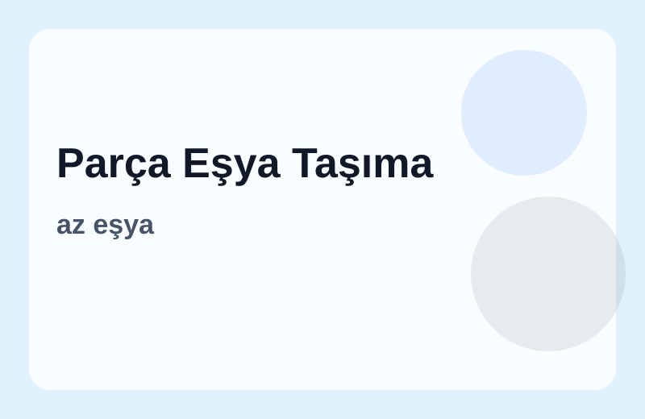
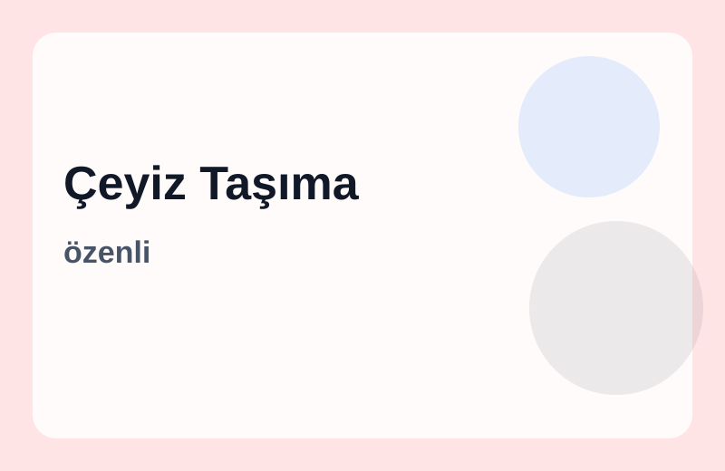
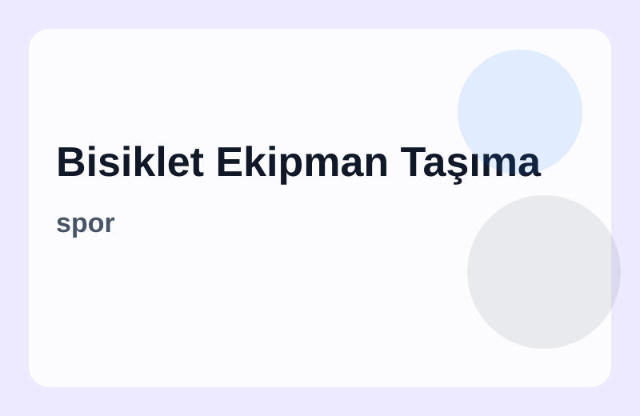
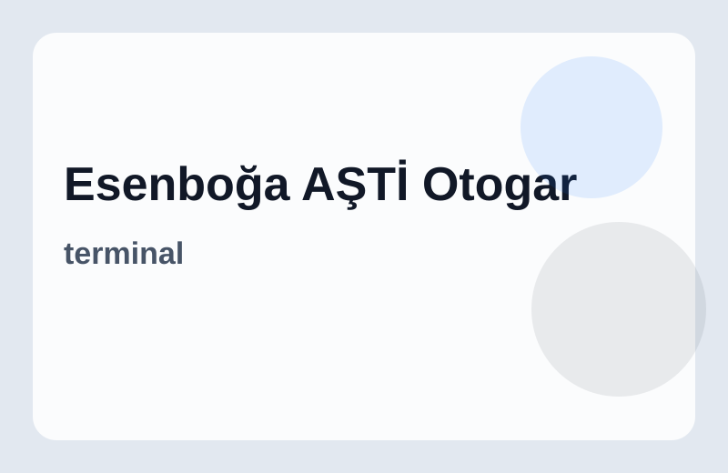
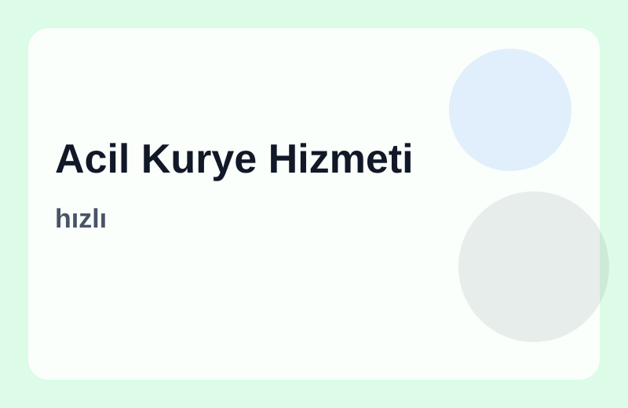
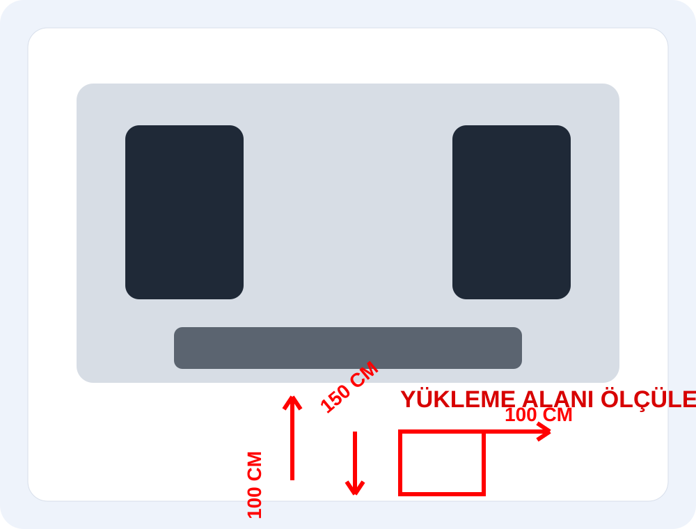

Parça Eşya Taşıma
Tek parça/az eşya • öğrenci eşyası • küçük mobilya • kişisel eşyalar.

Tek parça/az eşya • öğrenci eşyası • küçük mobilya • kişisel eşyalar.

Parça koli • e-ticaret kolisi • depo/mağaza çıkışlı ürünler.

Özenli yerleştirme • çizilme/kırılmaya karşı dikkatli taşıma.

Bisiklet • spor ekipmanları • valiz gibi özel parçalar.

Esenboğa havalimanı, AŞTİ/Otogar çıkışlı hızlı yük alma-bırakma.

Aynı gün acil teslimat ihtiyaçlarınız için hızlı çözüm.
Doblo tipi minivan araçlarla parça yükte hız + maliyet avantajı.

Randevu saatine uyum, hızlı alım-teslim.
Düzenli istif ve hassas eşyalara dikkat.
Dar sokak, yoğun trafik: Doblo avantajı.
WhatsApp üzerinden anında teklif akışı.
Uzunluk 150 cm • Genişlik 100 cm • Yükseklik 100 cm
“AŞTİ'den alıp eve bıraktılar. İletişim çok iyiydi.”
“Dar sokakta bile sorunsuz yaklaşıp hızlı teslim ettiler.”
Formu doldur → WhatsApp otomatik açılır.
Google Ads ve organik sıralama için ana sayfadan desteklenen alt sayfalar:
Mesafe, yük hacmi, kat durumu ve zaman planına göre netleşir.
Uygunluk durumuna göre akşam ve geç saat planlaması yapılabilir.
Keçiören, Çankaya, Yenimahalle, Etimesgut, Mamak, Sincan ve çevresine hizmet verilir.
Emre
“Bisikleti sağlam sabitlediler, tertemiz teslim edildi.”